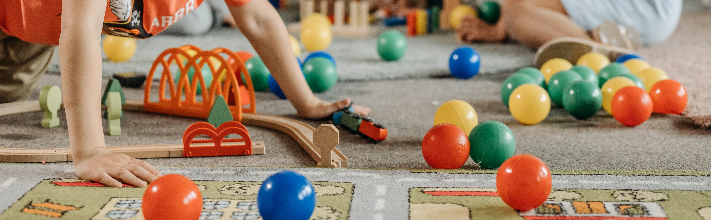
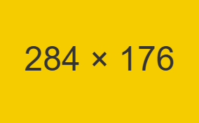
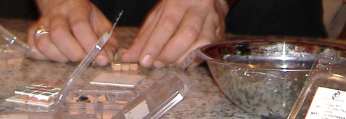
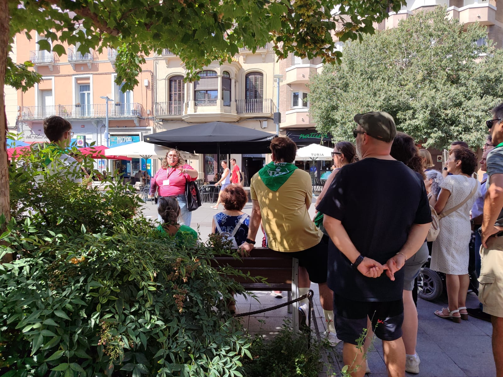

Àrea de lleure
ARCA TEMÀTICA ofereix i dissenya serveis i activitats pensats per a la diversió i l'entreteniment, sempre amb una base pedagògica de treball.
Ens adaptem a l'edat i als interessos de cada grup, des d'infants i joves fins a gent gran, i ens podem encarregar tant d'una activitat puntual com de la gestió d'un espai.

Infants i joves
- Casals
Durant les vacances escolars, amb jocs, tallers i sortides.
- Casals temàtics
Amb un fil conductor que dona sentit a totes les activitats.
- Jornades intensives
Un o pocs dies dedicats a un tema concret.
- Colònies temàtiques
Estades fora de casa per conviure i aprendre jugant.
Gent gran i turisme
- Gent gran
Activitats pensades per al seu ritme i els seus interessos.
- Activitats turístiques
Rutes i propostes per descobrir un lloc d'una altra manera.
Organització i gestió
- Muntatges lúdics i educatius
Jornades, fires i activitats per a entitats i ajuntaments.
- Gestió de centres culturals i de lleure
Programació i personal per al funcionament d'un equipament.
-

Casal -

Taller de mosaic -

Activitat turística
Tens un grup o una idea? Explica'ns què necessites i et preparem una proposta a mida.